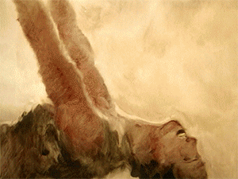

noun /ɑːt/
The expression or application of human creative skill and imagination, typically in a visual form such as painting or sculpture, producing works to be appreciated primarily for their beauty or emotional power.
Ik heb voor kunst als onderwerp gekozen omdat kunst overal om ons heen is. Van schilderijen en muziek tot dans en moderne kunstvormen. Kunst laat mensen nadenken, voelen en anders naar de wereld kijken.
Klik op de knop voor een cute kunst quote.